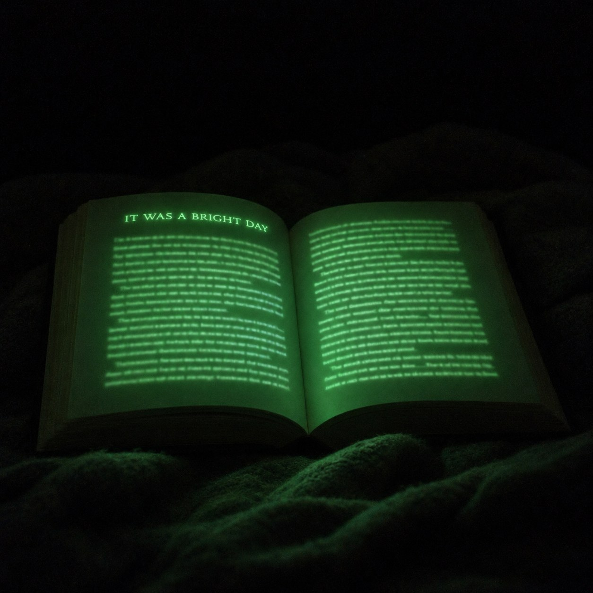
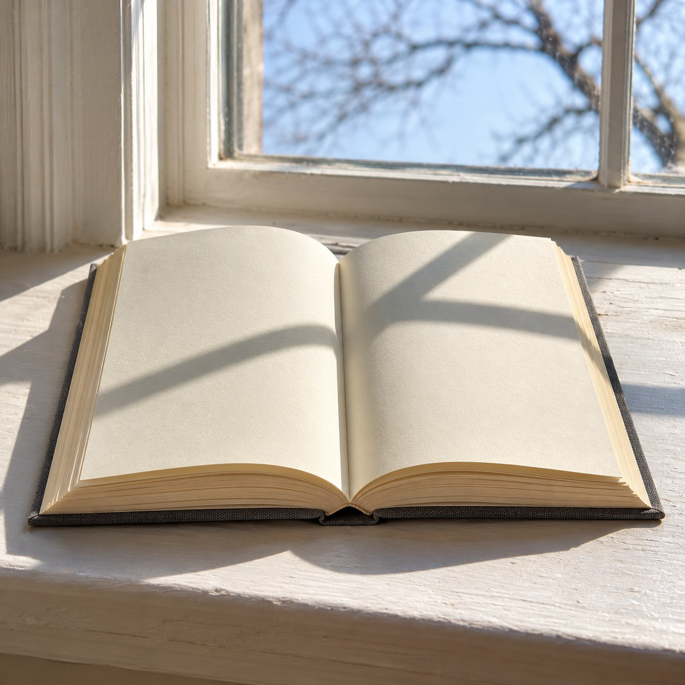

What the Page Kept


Marcel Broodthaers once took the unsold copies of his poems and set them in plaster, so they could be seen and never read. This book goes the other way. It can be read, and it cannot be seen.
Its pages are pale cream, and the words are printed in a pale cream ink that matches them, so by day the book looks blank. But the ink holds light. Leave the book open on a windowsill for an afternoon, carry it into a dark room, and the words come up out of the page in a soft green glow. Nothing else shows. Not the cover, not the edge of the paper, not your own hands. Only the lines, floating.
What the pages say is a slow account of daylight in a room: where the sun falls at ten, how it climbs the wall, when it leaves. A book about the day that can only be read at night, by what is left of the day.
Every other book is read by a light that comes from outside it, a lamp or a window. This one brings its own, and only a little. The first lines are bright. By the last page they are faint, and you read faster, leaning in, as if the words were leaving. They are. The light you read by was never yours. It was the page remembering the afternoon, and that kind of memory runs down.
In the morning it goes back on the sill, blank. Before anyone can read it again, it has to read the day.